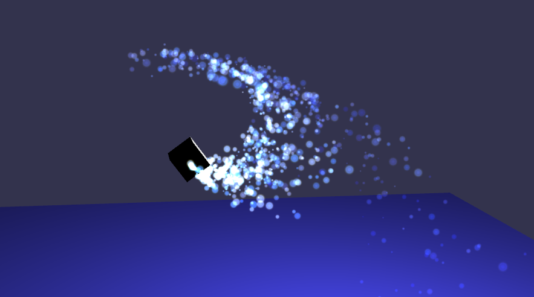

粒子
简介
这篇教程将要讨论Babylonjs中的粒子系统。粒子通常是细小的精灵对象用来模拟难以重复再现的事物比如火焰、烟雾、水流或者抽象的视觉效果比如魔法闪光和幻想粉尘。

一张图片属于playground的粒子系统示例
怎样做 ?
为了显示这个魔法戏法，第一件要做的事是建立一个新的对象，这个对象将作为粒子的发射器。在我们的示例中，一个立方体将被作为发射器对象，代表粒子的源泉。
var fountain = BABYLON.Mesh.CreateBox("fountain", 1.0, scene);
发射器作为粒子的来源，并且它在3D空间中的位置决定了粒子从哪里出现以及怎样移动。所以请注意这个对象的位置和角度。在我们的示例中，这个发射器是我们的源泉，但是如果你需要，你可以只使用一个点（BABYLON.Vector3）作为发射器。
现在，我们必须建立一个新的（还没有渲染）粒子系统对象：
var particleSystem = new BABYLON.ParticleSystem("particles", 2000, scene, customEffect);
简单。第一个参数是名字，第二个参数是粒子的最大数量，第三个参数是场景，第四个可选的参数代表粒子的着色器，用来代替默认的着色器。我将在后文中讨论第四个参数。
一个重要的部分时定义每一个粒子的纹理。每一个粒子将具有相同的图案，所以请仔细的选择你需要哪一个图案。但是请注意一个场景里可以包含多个粒子系统，并且每个粒子系统只能发射具有唯一图案的例子。同时也请注意多个粒子系统可以使用同一个发射器对象。我们的粒子纹理将是这个：

为了定义离子的纹理，添加这样的一行:
particleSystem.particleTexture = new BABYLON.Texture("Flare.png", scene);
(在 playground示例中, 我们使用 /textures/flare.png)
对于这个纹理，你可以使用一个可选的遮罩来过滤一些颜色，或者过滤掉一部分的透明度通道。
particleSystem.textureMask = new BABYLON.Color4(0.1, 0.8, 0.8, 1.0);
这个上述设定的输出:

最后一件重要的事是定义我们前面说过的发射器:
// Where the particles comes from
particleSystem.emitter = fountain; // the starting object, the emitter, a box in this case.
现在你将看到粒子系统开始工作。但是这可能不是我们的最终结果。我们可以重定义一些参数：
- 围绕发射器的盒子。我们的发射器是粒子来源的中心，但是如果你希望你的粒子从不止一个点发射出来，那么你可以让它这样做：
particleSystem.minEmitBox = new BABYLON.Vector3(-1, 0, 0); // Starting all From particleSystem.maxEmitBox = new BABYLON.Vector3(1, 0, 0); // To...
正如你所见，粒子被从X轴上的不同位置发射出来:

-
现在你可以个你的粒子一些颜色。颜色一和颜色二被合成，而“colorDead”则是粒子在消失之前所变化的颜色。
// Colors of all particles (splited in 2 + specific color before dispose) particleSystem.color1 = new BABYLON.Color4(0.7, 0.8, 1.0, 1.0); particleSystem.color2 = new BABYLON.Color4(0.2, 0.5, 1.0, 1.0); particleSystem.colorDead = new BABYLON.Color4(0, 0, 0.2, 0.0); -
粒子的尺寸:
// 每个粒子的尺寸（随机在最大最小值之间变化） particleSystem.minSize = 0.1; particleSystem.maxSize = 0.5; -
粒子存在时间:
// Life time of each particle (random between...) particleSystem.minLifeTime = 0.3; particleSystem.maxLifeTime = 1.5; -
发射频率。这决定了粒子的密度和粒子流的发射频率:
particleSystem.emitRate = 1000;

如果你只想每次发射有限的一些粒子，也可以做到。例如，如果你只想发射300个粒子：
particleSystem.manualEmitCount = 300;
请注意这个流是不持续的。这个一个一次性的粒子发射，所以这个函数会覆盖前面的“emitRate”参数。
-
选择的粒子模式。你可以在“BLENDMODE_ONEONE” （默认选择：源颜色被加入到目标颜色中不考虑透明度对结果的影响），和“BLENDMODE_STANDARD”（通过粒子的透明度混合当前颜色和粒子颜色）中选择。
particleSystem.blendMode = BABYLON.ParticleSystem.BLENDMODE_ONEONE; -
重力。你可以使用重力如果以希望给你的粒子一个方向（比如：火焰粒子沿Y轴向上移动）
//Set the gravity of all particles (not necessarily down) particleSystem.gravity = new BABYLON.Vector3(0, -9.81, 0); -
方向。在每个粒子被发射后随即绝地其方向，在方向向量1和方向向量2之间。
particleSystem.direction1 = new BABYLON.Vector3(-7, 8, 3); particleSystem.direction2 = new BABYLON.Vector3(7, 8, -3);

-
角速度. 你可以定义一个绕Z轴的旋转给每一个粒子（以弧度表示）：
particleSystem.minAngularSpeed = 0; particleSystem.maxAngularSpeed = Math.PI; -
速度/强度。你可以定义粒子发射的强度，和整体运动速度（更新速度默认为0.01，更快的更新等于更快的动画。）
particleSystem.minEmitPower = 1; particleSystem.maxEmitPower = 3; particleSystem.updateSpeed = 0.005;
持续时间。你可以设置粒子系统运行的时间（受上面的整体速度影响）。
particleSystem.targetStopDuration = 5;
- 处置。在停止时处置（或不处置）粒子系统（非常有用如果你希望建立一个一次性的粒子系统带有一个确定的目标停止时间）
particleSystem.disposeOnStop = true;
最后，你可以任何时候在你的代码中启动这个粒子系统通过:
particleSystem.start();
以及自然地停止它:
particleSystem.stop();
请尽情测试这个场景... 在我们的在线playground中.
自定义效果（构造函数中的第四个参数）
var ps = new BABYLON.ParticleSystem("particles", 2000, scene, customEffect);
customEffect是一种BABYLON.Effect对象用来指向一个可用的着色器程序.
Babylonjs的原始作者非常大方的给了我们 一个神奇的playground示例关于使用片元着色器效果的例子系统.访问这个链接，然后你可以看到一个存储在着色器存储器里的片元着色器程序。注意这一行:
BABYLON.Effect.ShadersStore["myParticleFragmentShader"] = [...]
下面一点，你可以看到:
var effect = engine.createEffectForParticles("myParticle", ["time"]);
.createEffectForParticles接收如下的参数:
- 片元名称（可以是着色器存储器中的名称也可以是一个DOM元素的id）（有些教程作者喜欢把glsl代码写在一个单独的html标签里）
- 额外的参数数组 (uniform数据类型)（在glsl中uniform指“全局量”）
- 额外的样板数组 (为了额外的纹理!)
粒子效果对象是一个轻度修改的Babylon效果对象对象. 同样要注意着色器存储器是一个命名空间基于特定的效果对象.
效果对象有多个setter方法，其中的一个是 .setFloat. 请注意他被使用在registerBeforeRender 方法中。这使得效果的速度在一个20秒的时间跨度间循环。我们（这个示例的作者）相应的变化这个片元着色器的时间参数。。。通过这个场景的渲染循环！我们爱它！
这是一条短注释来自 Deltakosh... 关于上面链接的示例:
默认情况下Babylon.js 将给你一个vUV 和一个 vColor调整参数。它们将为你传送粒子的纹理.但是你也可以自由的加入任何新的参数，就像我对“time”做的一样。
这一段教程正在建设中。我们将很快有更多可说的东西.（着色器编程是3D引擎编写的最核心技术，只有少数人能真正掌握。关于这方面的中文著作基本没有，译作则多为十几二十年前的旧书。着色器程序在高级语言环境中进行编译连接，然后送入显卡的GPU中执行。着色器分为“顶点着色器”和“片元着色器”两种，顶点着色器负责计算网格的每一顶点的位置和颜色，片元着色器负责在顶点之间插值生成像素。）
自定义函数
你可以对粒子进行更多的控制通过使用自定义函数:
startDirectionFunction: (emitPower: number, worldMatrix: Matrix,
directionToUpdate: Vector3): 这个函数可以被定义来专门的初始化每一个新粒子的方向。默认情况下，这个函数被如下代码定义：
startDirectionFunction = (emitPower: number, worldMatrix: Matrix, directionToUpdate: Vector3): void => {
var randX = randomNumber(this.direction1.x, this.direction2.x);
var randY = randomNumber(this.direction1.y, this.direction2.y);
var randZ = randomNumber(this.direction1.z, this.direction2.z);
Vector3.TransformNormalFromFloatsToRef(randX * emitPower, randY * emitPower, randZ * emitPower, worldMatrix, directionToUpdate);
}
startPositionFunction = (worldMatrix: Matrix, positionToUpdate:
Vector3): 这个函数被定义来为每个新的粒子专门初始化位置。默认情况下，这个函数被定义为如下代码：
startPositionFunction = (worldMatrix: Matrix, positionToUpdate: Vector3): void => {
var randX = randomNumber(this.minEmitBox.x, this.maxEmitBox.x);
var randY = randomNumber(this.minEmitBox.y, this.maxEmitBox.y);
var randZ = randomNumber(this.minEmitBox.z, this.maxEmitBox.z);
Vector3.TransformCoordinatesFromFloatsToRef(randX, randY, randZ, worldMatrix, positionToUpdate);
}
updateFunction: (particles: Particle[]): 这个函数可以被定义来为活动的粒子提供自定义的更新方法。这个函数将会被调用来代替通常的update (age, position, color, etc.). 不要忘记这个函数会在每一帧中被调用，所以请保持他简单和快速 :). 默认情况下以下代码被使用:
updateFunction = function(particles) {
for (var index = 0; index < particles.length; index++) {
var particle = particles[index];
particle.age += this._scaledUpdateSpeed;
if (particle.age >= particle.lifeTime) { // Recycle
particles.splice(index, 1);
this._stockParticles.push(particle);
index--;
continue;
}
else {
particle.colorStep.scaleToRef(this._scaledUpdateSpeed, this._scaledColorStep);
particle.color.addInPlace(this._scaledColorStep);
if (particle.color.a < 0)
particle.color.a = 0;
particle.angle += particle.angularSpeed * this._scaledUpdateSpeed;
particle.direction.scaleToRef(this._scaledUpdateSpeed, this._scaledDirection);
particle.position.addInPlace(this._scaledDirection);
this.gravity.scaleToRef(this._scaledUpdateSpeed, this._scaledGravity);
particle.direction.addInPlace(this._scaledGravity);
}
}
}
下一步
粒子系统是非常强大并且多样的工具，它能帮助为你的场景带来真实性和动态性。不要犹豫使用它们，因为它们并不非常消耗资源。
与我们一起，意为我们将学习一个新的、非常有趣的东西: 设置你的环境.